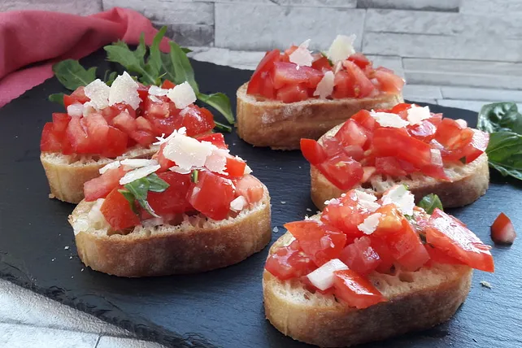
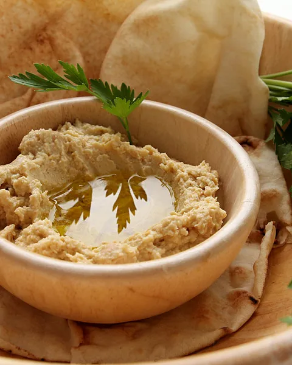
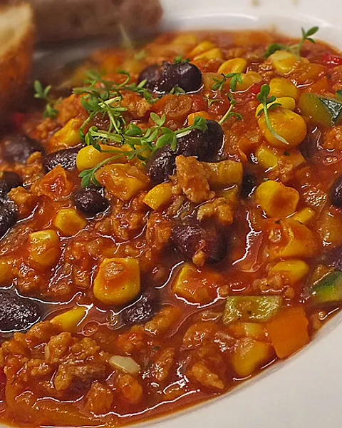
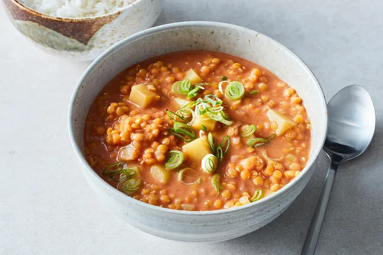

Vegane Rezepte
Vorspeisen
Bruschetta di modena
Eine würzige Mischung aus Kidneybohnen, schwarzen Bohnen, Mais, Tomaten und Gewürzen wie Kreuzkümmel, Paprika und Chili. Servieren Sie es mit Reis oder Nachos.
Hummus
Eine würzige Mischung aus Kidneybohnen, schwarzen Bohnen, Mais, Tomaten und Gewürzen wie Kreuzkümmel, Paprika und Chili. Servieren Sie es mit Reis oder Nachos.
Tomatensuppe

Eine würzige Mischung aus Kidneybohnen, schwarzen Bohnen, Mais, Tomaten und Gewürzen wie Kreuzkümmel, Paprika und Chili. Servieren Sie es mit Reis oder Nachos.
Hauptspeisen
Veganes Chili
Eine würzige Mischung aus Kidneybohnen, schwarzen Bohnen, Mais, Tomaten und Gewürzen wie Kreuzkümmel, Paprika und Chili. Servieren Sie es mit Reis oder Nachos.
Linsen-Curry mit Kokosmilch
Rote Linsen in einer würzigen Kokosmilch-Curry-Sauce mit Ingwer, Knoblauch, Kurkuma und Garam Masala kochen. Servieren Sie es mit Basmatireis.
Gemüsepfanne mit Tofu
Eine bunte Mischung aus gebratenem Tofu und saisonalem Gemüse wie Brokkoli, Paprika, Karotten und Zuckerschoten in einer Sojasauce-Marinade.
Vegane Pizza mit Gemüsebelag

Eine herzhafte Suppe aus Gemüsebrühe, Linsen und einer Vielzahl von Gemüsesorten wie Karotten, Sellerie und Tomaten.
Zucchini-Nudeln mit Avocado-Pesto
Zucchini-Nudeln mit cremigem Avocado-Pesto aus Avocado, Basilikum, Knoblauch, Zitronensaft und Pinienkernen. Mit Kirschtomaten garnieren.
Kichererbsen-Spinat-Curry
Ein herzhaftes Curry aus Kichererbsen, Spinat, Tomaten und Gewürzen wie Kurkuma, Kreuzkümmel und Koriander. Servieren Sie es mit Naan-Brot oder Reis.
Veganer Gemüseburger

Gemüse-Burgerpattys aus püriertem Gemüse wie Süßkartoffeln, Bohnen und Pilzen mit einer würzigen BBQ-Sauce. Servieren Sie sie in einem Vollkorn-Burgerbrötchen mit Salat und Tomate.
Gebratener Tofu mit Erdnusssauce
Gebratener Tofu in einer würzigen Erdnusssauce aus Erdnussbutter, Sojasauce, Ingwer und Knoblauch. Mit Frühlingszwiebeln und Sesam bestreuen und mit Reis servieren.
Desserts
Vegane Schokoladenmousse

Eine cremige Schokoladenmousse aus Avocado, Kakao, Ahornsirup und Vanilleextrakt. Mit frischen Beeren garnieren.
Veganer Grießpudding
Eine cremiger Grießpudding aus Himbeeren und Kokosmilch
Veganer Schokokuchen
Saftiger Schokokuchen